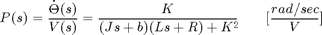
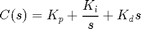
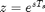
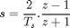

DC Motor Speed: Digital Controller Design
Key MATLAB commands used in this tutorial are: tf , c2d , feedback , step , rlocus
Contents
In this page, we will consider the digital version of the DC motor speed control problem. A sampled-data DC motor model can be obtained from conversion of the analog model, as we will describe. In this example we will design a PID controller.
Thr continuous open-loop transfer function for an input of armature voltage and an output of angular speed was derived previously as the following.

For the original problem setup and the derivation of the above equations, please refer to the < ?example=MotorSpeed§ion=SystemModeling DC Motor Speed: System Modeling> page.
For a 1-rad/sec step reference, the design criteria are the following.
- Settling time less than 2 seconds
- Overshoot less than 5%
- Steady-state error less than 1%
Creating a sampled-data model of the plant
The first step in the design of a digital control system is to generate a sampled-data model of the plant. Therefore, it is necessary to choose a frequency with which the continuous-time plant is sampled. In choosing a sampling period, it is desired that the sampling frequency be fast compared to the dynamics of the system in order that the sampled output of the system captures the system's full behavior, that is, so that significant inter-sample behavior isn't missed.
Let's create a continuous-time model of the plant. Create a new < ?aux=Extras_Mfile m-file> and add the following MATLAB code (refer to the main problem for the details of getting these commands). Running the m-file within the MATLAB command window will generate the output shown below.
J = 0.01;
b = 0.1;
K = 0.01;
R = 1;
L = 0.5;
s = tf('s');
P_motor = K/((J*s+b)*(L*s+R)+K^2);
zpk(P_motor)
The use of the zpk command above transforms the transfer function into a form where the zeros, poles, and gain can be seen explicitly. Examining the poles of the plant (or its frequency response), the dominant pole of the plant (sigma approximately equal to 2) corresponds to a settle time of approximately 2 seconds (4 / sigma). Therefore, choosing a sampling period of 0.05 seconds is significantly faster than the dynamics of the plant. This sampling period is also fast compared to the speed that will be achieved by the resultant closed-loop system.
In this case, we will convert the given transfer function from the continuous Laplace domain to the discrete z-domain. MATLAB can be used to achieve this conversion through the use of the c2d command. The c2d command requires three arguments: a system model, the sampling time (Ts), and the type of hold circuit. In this example, we will assume a zero-order hold (zoh) circuit. Refer to the < ?example=Introduction§ion=ControlDigital Introduction: Digital Controller Design> page for further details. Adding the following commands to your m-file and running in the MATLAB command window generates the sampled-data model shown below.
Ts = 0.05;
dP_motor = c2d(P_motor,Ts,'zoh');
zpk(dP_motor)
We would now like to analyze the closed-loop response of the system without any additional compensation. First, we have to close the loop of the transfer function by using the feedback command. After closing the loop, let's inspect the closed-loop step response with the zero-order hold. This can be accomplished by using the step and stairs commands. Since the step command is fed a discrete model, it will output a vector of discrete samples at the sample time Ts associated with the model (click < ?aux=Extras_step here> for further details). The syntax below specifies to simulate the step response for 0.5 seconds. The stairs command draws these discrete data points as a stairstep, just like what would be produced by a zero-order hold circuit. Add the following MATLAB code at the end of your previous m-file and rerun it. You should generate the plot shown below.
sys_cl = feedback(dP_motor,1); [y,t] = step(sys_cl,12); stairs(t,y); xlabel('Time (s)') ylabel('Velocity (rad/s)') title('Stairstep Response: Original')
Examination of the above shows that the steady-state error is much too large and the settle time may be a little slow.
PID Controller
Recall that the continuous-time transfer function for a PID controller is:

There are several ways for mapping from the s-plane to z-plane. Above we used a zero-order hold conversion for the plant model because that reflected the type of hold circuit that would be used in sampling the signals from the plant in a physical implementation of the control system. For the controller, we may prefer to use a conversion that more accurately approximates the behavior that would be achieved with a continuous, rather than digital, controller. The exact conversion between the Laplace and z-domains is given below.

This conversion, however, involves a trancendental function and the resulting transfer function cannot be represented as a ratio of polynomials. This makes it difficult to implement such a control algorithm on a digital computer. Therefore, we will use an approximate conversion. In particular, we are going to use the bilinear transformation shown below.

Equivalently, we will again use the c2d command in MATLAB to convert the continuous-time PID compensator to a discrete-time PID compensator by specifying 'tustin' as the conversion method. Tustin's method uses the bilinear transformation to convert a continuous model to discrete time. According to the < ?example=MotorSpeed§ion=ControlPID DC Motor Speed: PID Controller Design> page , Kp = 100, Ki = 200 and Kd = 10 were found to satisfy all of the given design requirements. We will use these gains again for this example. Now add the following MATLAB commands to your previous m-file and rerun it in the MATLAB command window.
Kp = 100;
Ki = 200;
Kd = 10;
C = Kp + Ki/s + Kd*s;
dC = c2d(C,Ts,'tustin')
Let's see if the performance of the closed-loop response with PID compensator satisfies the given design requirements. Add the following code to the end of your m-file and rerun it. You should get the following closed-loop stairstep response.
sys_cl = feedback(dC*dP_motor,1); [x2,t] = step(sys_cl,12); stairs(t,x2) xlabel('Time (seconds)') ylabel('Velocity (rad/s)') title('Stairstep Response: with PID controller')
As you can see from the above plot, the closed-loop response of the system is unstable. Therefore, something must be wrong with the compensated system. We should take a look at the root locus of the compensated system. Add the following MATLAB commands onto the end of your m-file and rerun it.
rlocus(dC*dP_motor)
axis([-1.5 1.5 -1 1])
title('Root Locus of Compensated System')
From this root-locus plot, we see that the denominator of the PID controller has a pole at -1 in the z-plane. We know that if a pole of a system is outside the unit circle, the system will be unstable. This compensated system will always be unstable for any positive gain because there are an even number of poles and zeros to the right of the pole at -1. Therefore, a closed-loop pole will always move to the left and outside the unit circle as the loop gain is increased. The pole at -1 comes from the compensator, hence we can change its location by changing the compensator design. In this case we choose to cancel the zero at -0.82, this will make the system stable for at least some gains. Add the following code to your m-file and rerun it at the command line to generate the root locus plot shown below.
z = tf('z',Ts); dC = dC/(z+0.82); rlocus(dC*dP_motor); axis([-1.5 1.5 -1 1]) title('Root Locus of Compensated System');
The new closed-loop system will have a pole near -0.82 instead of -1, which almost cancels the zero of the uncompensated plant. Click on the root locus curve in several places to see the gain that places a closed-loop pole at a particular location, along with the corresponding overshoot, damping, etc., as shown in the figure below. Of course, the damping and overshoot numbers correspond to the actual response only if the selected closed-loop pole is dominant.

You can also determine the gain corresponding to a specfic closed-loop pole location using the rlocfind command. Typing [K,poles] = rlocfind(dC*dP_motor) at the command line will generate a cursor that you can then use to click on the point of interest on the root locus. MATLAB will then return the appropriate gain K and all of the corresponding closed-loop poles. This is useful in that it lists all of the closed-loop poles, not just the point you clicked on.
We will choose a gain of 0.8 and examine the resulting closed-loop step response by typing the following commands at the MATLAB command window.
sys_cl = feedback(0.8*dC*dP_motor,1); [x3,t] = step(sys_cl,8); stairs(t,x3) xlabel('Time (seconds)') ylabel('Velocity (rad/s)') title('Stairstep Response: with Modified PID controller')
The plot above shows that the settling time is less than 2 seconds and the percent overshoot is around 2%. Additionally, the steady-state error is zero. Therefore, this response satisfies all of the given design requirements.